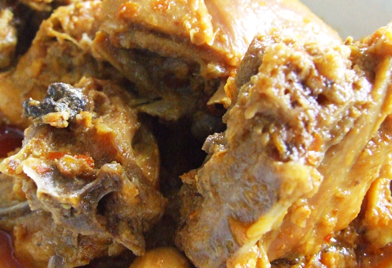
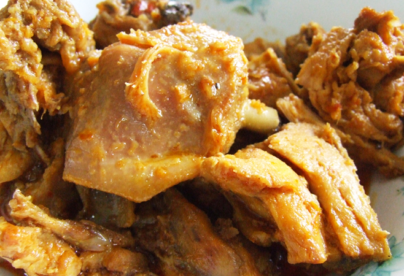

Duck Curry
Ingredients
- fresh duck
- 1tsp salt
- freshly ground black pepper
- 50 ml (1/4 cup) dark soy sauce
- 4 dried black mushrooms
- 14 oz squash
- cloves qarlic
- small onion
- oil for deep frying
- 5 1/3 cups chicken stock
- pickled limes
- 2 tsp cornflour
Instructions
- Clean and prepare duck and cut into pieces. Place in shallow dish, add salt, pepper, soy sauce and let stand for 40 minutes. Soak mushrooms for 40 minutes. Discard stems and cut the caps in half.
- Peel squash, cut into bite-size pieces, finely chop the garlic and onion. Heat oil in large pan and deep-fry the duck for 3-4 minutes.
- Remove duck and drain thoroughly on kitchen paper. Pour away most of the oil from the pan, add garlic and onion and saute for 3-4 minutes.
- Replace the duck, pour in stock and bring to boil. Cover pan, reduce heat and simmer for 90 minutes until duck is almost cooked. Remove lid from pan, add mushrooms, squash, pickled limes and continue to cook over moderate heat for further 10-15 minutes till duck is tender.
- Transfer pieces of duck to a serving plate and surround with mushroom and squash. Strain the stock, pour 1 2/3 cups into fresh pan and bring back to boil.

- Mix cornflour with a small quantity of water, add this to pan and stir to thicken before pouring sauce over the duck.
